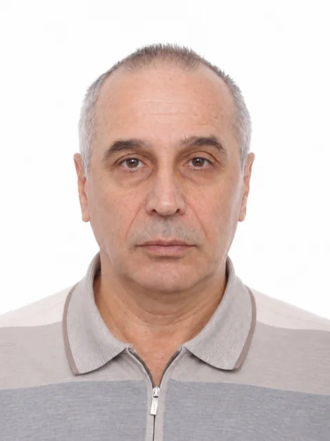
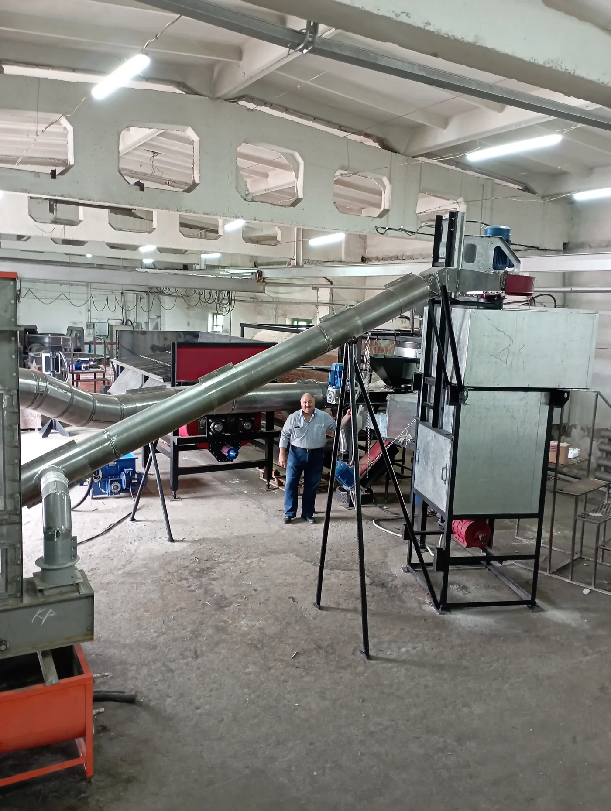
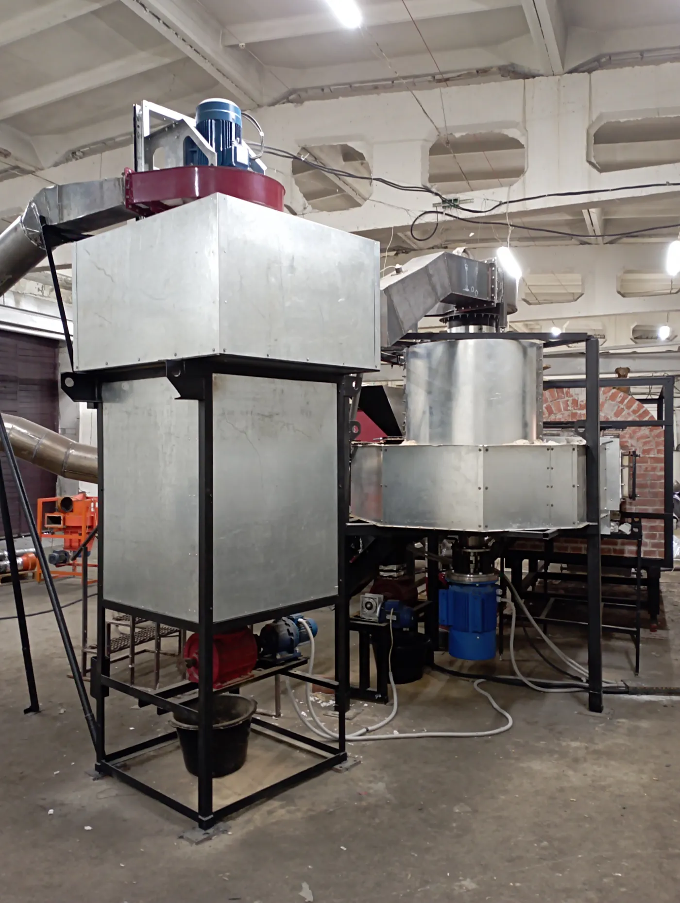
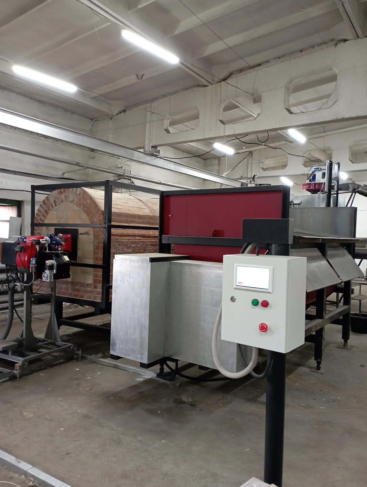
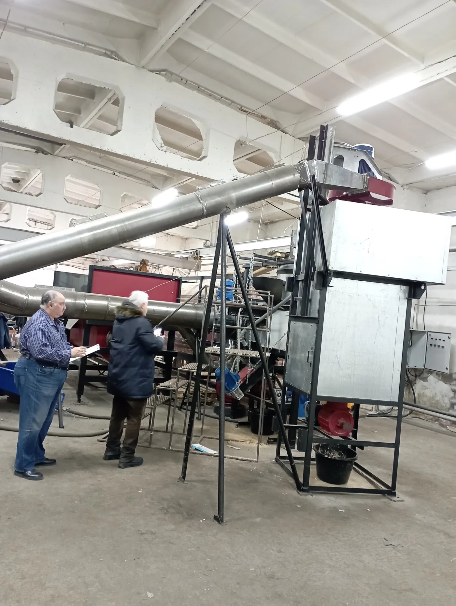

Связаться: +7 996 545-76-81 · Sv195503@yandex.ru
По образованию — инженер-судостроитель, кандидат технических наук; почти 20 лет преподавал строительную механику и сопротивление материалов в вузе. Более 25 лет в инноватике — началось ещё в вузе. Сейчас занимаюсь экологическими проектами: разрабатываю оборудование и техпроцессы для переработки органических отходов. В проектах моя роль — выдвинуть идею, довести её до концепции оборудования и техпроцесса, защитить интеллектуальную собственность и содействовать выводу проекта на рынок.
Именно проект по утилизации помёта позволил перейти к BSF. Его технологии и оборудование переносятся в переработку личинки и фрасса, а сравнение птицефабрики и BSF-фермы дало гипотезу о смене производственной единицы.
Идеи и концепции в проектах мои, но реализация всегда шла в команде: инженеры, технологи, патентоведы, научные организации, производственные партнёры и инвесторы. В BSF-проекте к этой модели добавляется профильный биолог.




Это промышленный пилот на действующем предприятии, а не лабораторная установка. Фотографии — личный архив автора, публикуются с его разрешения.
Агрохолдинг «Сибирский Премьер» · Реактор Коммерциализации · Empyrio
Разные биообъекты — общая архитектура производства
Сходство не в биологии, а в промышленной организации: обе системы непрерывно воспроизводят биоматериал, управляют средой, синхронизируют партии и перерабатывают остатки.
Одноимённые по смыслу этапы расположены на одном уровне.
| Бройлерная птицефабрика | BSF-производство | Переносимый принцип |
|---|---|---|
| Родительское стадо | Маточное стадо BSF | Управляемое воспроизводство исходного биоматериала |
| Сбор инкубационного яйца | Сбор яйцекладок BSF | Учёт количества и качества репродуктивного материала |
| Инкубаторий | Инкубация яйца BSF | Управление температурой, влажностью и синхронностью вывода |
| Цыплята суточного возраста | Неонаты и молодая личинка | Стандартизация стартового биоматериала |
| Участок раннего выращивания | Nursery | Специальные режимы кормления и микроклимата |
| Птичники откорма | Модули откорма BSF | Изолированные производственные партии |
| Клеточные батареи | Каркас с технологическими модулями | Многоярусное использование объёма |
| Клетка или секция | Ростовая ёмкость | Локальная единица размещения биомассы |
| Комбикормовый участок | Подготовка субстрата | Рецептура, измельчение, смешивание и дозирование |
| Кормораздача | Дозированное кормление личинки | Равномерность питания и управление рационом |
| Вентиляция и отопление | Управление температурой, влажностью и газовым составом | Стабилизация среды обитания |
| Взвешивание птицы | Контроль массы и активности личинки | Прогноз готовности партии |
| Оборот стада | Оборот партий личинки | Планирование загрузки производственных мощностей |
| Убой и переработка | Сепарация, бланширование, сушка и измельчение | Превращение живой биомассы в товарный продукт |
| Переработка помёта | Обработка фрасса | Получение удобрения и энергетического продукта |
| Котельная и энергосистема | Сжигатель, теплообменник и рекуперация | Внутреннее энергетическое обеспечение |
| Ветеринарно-санитарный контроль | Биобезопасность и контроль микробиологии | Разделение партий, мойка, санитарная обработка |
| Производственная диспетчеризация | PLC/SCADA/MES и AI-агенты | Управление процессами на основе данных |
Схемы построены по технологической карте проекта; таблица — по сравнительному анализу проекта (bsf-team-report.md). Сходство отражает промышленную архитектуру, а не биологию: птица и личинка — разные объекты, и биологические режимы BSF требуют отдельной валидации.
Премиальные рынки вместо массового
Отрасль научилась делать продукт, но не научилась делать его дешёвым. Поэтому продаёт там, где цена вторична.
Премиальные сегменты, где платят за свойства, а не за тонну.
| Сегмент | Продукт | Почему премиальный |
|---|---|---|
| Корма для домашних животных | сушёная личинка, мука, жир | готовность платить за альтернативный белок, высокая маржа, меньше ценовое давление |
| Косметика и БАДы | липиды, хитин и хитозан, меланин | высокая добавленная стоимость при малых объёмах |
| Премиальная аквакультура | мука и жир для лосося и креветки | ограниченные объёмы, высокая цена конечного продукта |
| Экзотические животные и рептилии | сушёная личинка | нишевый спрос, цена не главный критерий выбора |
| Органоминеральные удобрения | фрасс, гранулы, биостимуляторы | премия за органику и замкнутый цикл |
Массовый рынок — это рыбная мука и соевый шрот: огромные объёмы, отлаженная логистика и покупатель, чувствительный к цене. Чтобы войти, БЛК должен стоить не дороже. Пока не получается: при почти бесплатном сырье затраты уходят в труд, энергию и оборудование. Отсюда парадокс: сырья много и оно дешёвое, а продукт остаётся дорогим.
Попытка уйти от ручного труда внутри лоточной технологии приводит к другому: вокруг лотков выстраивается система автоматизации на основе общепромышленных роботов, конвейеров и шаттлов. Она добавляет капитальные затраты и вторичные расходы на обслуживание, но саму производственную единицу не меняет.
Отсюда карикатурная аналогия — снова по линии птицефабрики. Представьте, что примитивный деревенский курятник решили автоматизировать, не трогая его конструкцию: вокруг него бегает толпа современных антропоморфных роботов с вёдрами — комбикорма, воды, помёта. Технически возможно, экономически абсурдно: курятник остался курятником, а стоимость выросла.
С лотком происходит то же самое: он остаётся пассивной ёмкостью, вокруг которой движется автоматика. Вывод для современной BSF-фермы — уходить от лотка и менять саму производственную единицу.
Синтез промышленной логики птицефабрики и техпроцесса BSF дал новое техническое решение — активный модуль выращивания. Интеллектуальная собственность на него ещё не оформлена, поэтому до патентования технические подробности раскрываются только после подписания NDA.
Оценка проекта; сегменты и ценовые ориентиры — по отраслевым обзорам 2026 года.